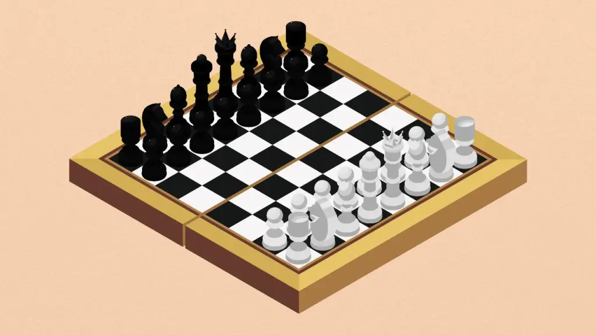
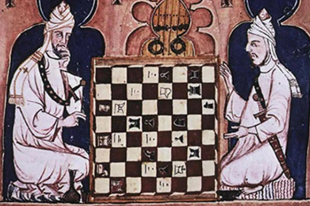
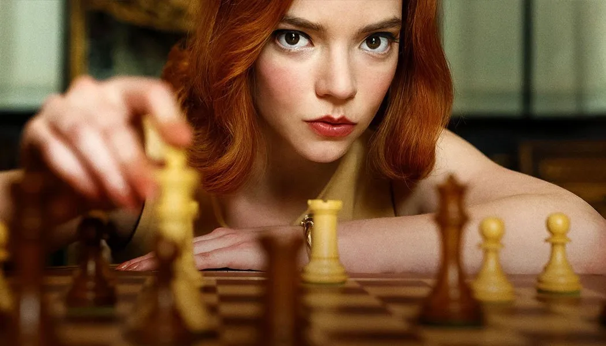
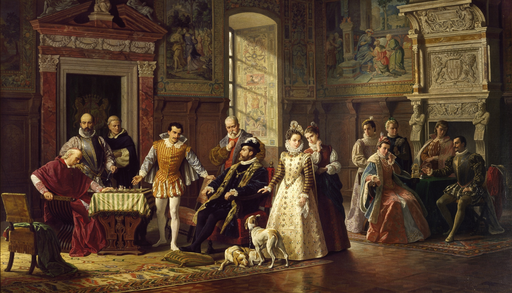
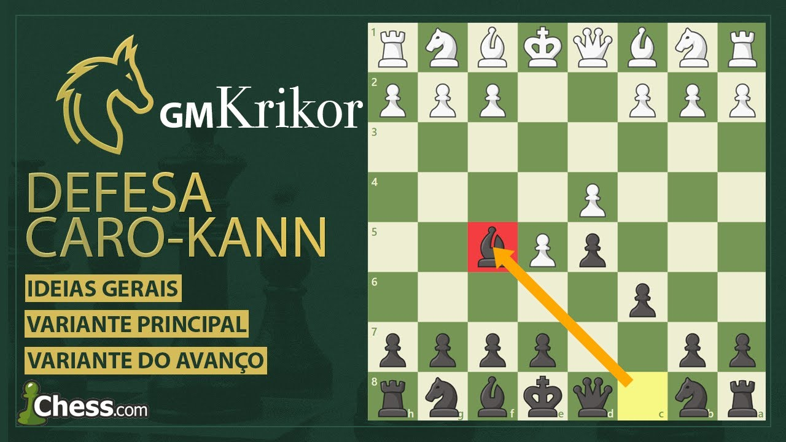

História, Grandes Mestres, estilos de jogo, aberturas famosas e grandes mentes.
O que é Xadrez?
O xadrez é um jogo de estratégia para dois jogadores jogado em um tabuleiro de 64 casas.
É considerado um dos jogos de raciocínio mais antigos e influentes da história.
O jogo moderno surgiu a partir do Chaturanga, criado na Índia por volta do século VI.
Com o passar dos séculos, o jogo se espalhou pela Pérsia, pelo mundo árabe e depois pela Europa,
sofrendo diversas mudanças até chegar às regras atuais.

Como o Xadrez Funciona?
Cada jogador começa com 16 peças:
8 peões, 2 torres, 2 cavalos, 2 bispos, 1 rainha e 1 rei.
O objetivo principal do jogo é dar xeque-mate no rei adversário.
Isso acontece quando o rei está ameaçado e não possui nenhum movimento legal para escapar.
O jogo exige cálculo, memória, estratégia, adaptação e controle emocional.
Em níveis mais altos, partidas podem durar várias horas.
Onde o Xadrez Foi Criado?
O ancestral do xadrez moderno surgiu na Índia e era chamado de Chaturanga.
O nome significava “quatro divisões militares”:
infantaria, cavalaria, elefantes e carruagens.
Depois, o jogo chegou à Pérsia, onde passou a ser chamado de Shatranj.
Foi nessa época que surgiram termos famosos como “xeque” e “xeque-mate”.
Durante a Idade Média, o jogo foi levado para a Europa pelos árabes e começou
a evoluir até atingir as regras modernas no século XV.

O que é um Grandmaster (GM)?
Grandmaster, ou Grande Mestre, é o maior título oficial do xadrez.
O título é concedido pela FIDE, a Federação Internacional de Xadrez.
Para se tornar GM, um jogador precisa atingir um rating extremamente alto
e conquistar normas em torneios oficiais contra outros jogadores fortes.
Menos de 2000 jogadores na história conquistaram esse título,
tornando-o um dos reconhecimentos mais difíceis do esporte.
Magnus Carlsen - O mais brilhante da era moderna
Magnus Carlsen nasceu em 30 de novembro de 1990, na Noruega.
Ele se tornou Grande Mestre aos 13 anos de idade,
sendo considerado um dos maiores prodígios da história do xadrez.
Em 2013, derrotou Viswanathan Anand e se tornou Campeão Mundial de Xadrez.
Depois disso, dominou o cenário mundial durante anos,
vencendo títulos clássicos, rápidos e blitz.
Magnus é conhecido por seu estilo universal.
Ele consegue jogar posições agressivas, estratégicas e defensivas
com altíssimo nível técnico.
Diferente de muitos jogadores modernos,
Carlsen frequentemente evita depender apenas de memorização de aberturas.
Seu foco principal está no meio-jogo e nos finais.
Os Estilos de Jogo
Agressivo
Jogadores agressivos buscam ataques rápidos,
sacrifícios e pressão constante no rei adversário.
Grandes nomes desse estilo incluem Mikhail Tal,
Garry Kasparov e Hikaru Nakamura.
Estratégico
O estilo estratégico foca em posicionamento,
controle do centro e planos de longo prazo.
Magnus Carlsen e Bobby Fischer são exemplos famosos
desse tipo de abordagem.
Fechado
Jogadores fechados preferem estruturas sólidas,
segurança e redução de riscos.
Anatoly Karpov e Tigran Petrosian ficaram conhecidos
pela precisão defensiva.
Abertura Agressiva — Defesa Siciliana
A Defesa Siciliana surge após os movimentos:
1.e4 c5.
Ela é considerada uma das respostas mais agressivas ao peão do rei.
A abertura cria posições desequilibradas e oferece grandes chances de ataque.
A Siciliana começou a ser estudada no século XVI
e foi utilizada por inúmeros campeões mundiais,
incluindo Garry Kasparov e Bobby Fischer.

Abertura Estratégica — Ruy López
A Ruy López é uma das aberturas mais tradicionais da história.
Ela começa com:
1.e4 e5 2.Cf3 Cc6 3.Bb5.
O nome vem do padre espanhol Ruy López de Segura,
que analisou a abertura no século XVI.
A abertura prioriza desenvolvimento,
controle central e planos posicionais de longo prazo.
Magnus Carlsen utiliza frequentemente sistemas derivados da Ruy López.

Abertura Fechada — Defesa Caro-Kann
A Defesa Caro-Kann começa com:
1.e4 c6.
Ela foi desenvolvida pelos enxadristas Horatio Caro
e Marcus Kann no século XIX.
É conhecida por sua solidez,
segurança estrutural e baixo risco.
Muitos jogadores posicionais utilizam a Caro-Kann
para neutralizar ataques rápidos e alcançar finais confortáveis.

O Xadrez Atualmente
Hoje, o xadrez é praticado no mundo inteiro,
tanto presencialmente quanto online.
Plataformas digitais popularizaram o jogo
e milhões de partidas são jogadas diariamente.
Campeonatos mundiais continuam sendo organizados pela FIDE,
enquanto streamers e criadores de conteúdo ajudaram
o jogo a atingir novas gerações.
Magnus Carlsen é considerado por muitos o maior jogador da história
devido à sua consistência, versatilidade e domínio competitivo.